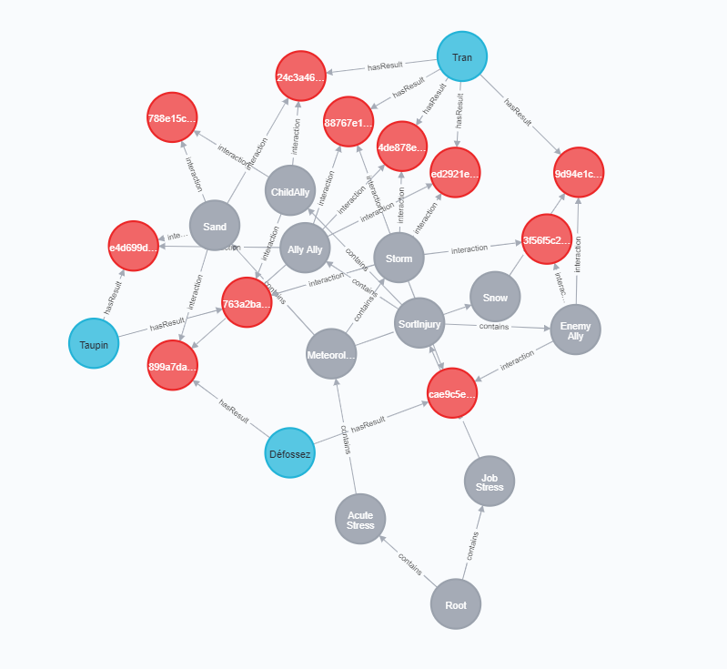

Ce projet s'inscrit dans le cadre des travaux de recherche d'une thèse, réalisée par Luca PELISSERO, client de ce projet. Le sujet de thèse traite de l’entraînement d’apprenants dans des situations stressantes dans le domaine de la médecine militaire réalisée dans des contextes particulièrement ardus. Les formateurs sont ceux qui créent et adaptent les exercices des apprenants afin que ces derniers puissent améliorer des compétences qui ont été ciblées par les formateurs.
Objectifs
L’application finale devra permettre de pouvoir créer et visualiser le profil de compétence de l’apprenant dans le cadre de ses entraînements en Réalité Virtuelle.
Utilisateurs
Les formateurs seront les futurs utilisateurs de l’application.
Concurrence
Une telle application n'a jamais été réalisée auparavant et par conséquent il est impossible de regarder ce qui se fait déjà chez des concurrents.
Développement
Le développement de l'application s'est divisé en plusieurs tâches :
Maquette
La maquette du projet a été réalisée à l'aide de figma.
Base de données
Le système de gestion de base de donnée basée sur les graphes
Backend
Le back-end a été implémenté en C# avec ASP.NET Core 3.1
Front-end
Le front-end de l'application a été developpé en utilisant vuejs 2
Application finale
Processus
Discussion
Rédaction du cahier de charge et élaboration de la maquette
Serveur
Développement du serveur sous le framework .NET API de C#
L'interface
Développement de l'interface web sous Vuejs et ZingChart
Phase de tests
Tests et correction des erreurs lors de l'exécution de l'application
FIN
DU
PROJET!
Notre équipe
Claire TAUPIN
GI02
Développeuse backend
Maria AL BEJJANI
GI04
Développeuse front-end
Juliette DÉFOSSEZ
GI04
Développeuse front-end
Quoc Gia Cat TRAN
GI05
Développeur backend
Maquette
La maquette a été établie après la rédaction du cahier de charge et l'identification des besoins de notre client.
Le dashboard est une des fonctionnalité optionnelle que nous avions voulu développer. Ce dernier permet d'avoir une vision globale sur l'ensemble des apprenants.
Figure 1. Dashboard
Une autre fonctionnalité optionnelle est de pouvoir lister l'ensemble des apprenants et regarder le profil de chacun
Figure 2. Liste des apprenants
Figure 3. Profil d'un apprenant
La fonctionnalité principale est de pouvoir visualiser le profil ZPD d'un apprenant. Le formateur peut générer le profl ZPD d'un apprenant en cliquant sur les noeuds de l'arbre de connaissances. Il pourra par la suite ajouter, modifier ou supprimer des croyances pour chaque situation.
Figure 4. Profil ZPD d'un apprenant
Une autre fonctionnalité principale est de pouvoir visualiser l'arbre de connaissances. Le formateur peut ajouter et supprimer une connaissance
Figure 5. Arbre de connaissance
Base de donnée
L'application repose sur une base de données Neo4j. Il s'agit d'une base de données orientée graphes.

Node:
les connaissances que les formateurs souhaitent évaluer.
Person:
les apprenants.
Belief:
les croyances associées à une situtation. Une situation est composée d'au moins deux connaissances. Pour évaluer les capacités d'un apprenant le formateur saisies 4 valeurs qui composent une croyance : "ability", "disability", "conflict", "ignorance"
Backend
La partie backend et l'API REST sont developées en C#. Les requetes API ont été testées à l'aide du logiciel POSTMAN.
Architecture de l'application
Model:
Model est l'ensemble des classes manipulées par le contrôleur. Il est composé d'une classe Belief, Node, et Person.
Elles sont suffisantes pour représenter l'ensemble de notre base de données.
Repository:
Le Repository a pour rôle d'interroger la base de données Neo4j au travers des requêtes Cypher et de la modifier si besoin.
Elle crée aussi un nouvel objet du modèle et le renvoie au Controller.
Controller:
Le Controller récupère le résultat des requêtes Cypher faite par le Repository et renvoie s'assure de la validité du résultat.
Il renvoie ensuite le résultat à l'utilisateur à l'aide d'une requête http.
Pour plus de détails sur le fonctionnement de l'API, suivez le lien Gitlab
Front-end
L'interface WEB a été developpée à l'aide de VueJs. Ce dernier a été couplée a des frameworks VueJs comme Vuesax et des librairies tel que ZingChart.
Vuejs
a pour objectif de faciliter la création de composants. Ce qui nous a permis de développer les arbres de connaissances et le graphe ZPD indépendamment.
ZingChart
a été utilisée pour les arbres de connaissances. Cette librairie est facilement intégrable à VueJs.
Interface web
Ajouter, supprimer et modifier des apprenants
Ajouter, supprimer et modifier des connaissances dans la base de connaissance
Ajouter, supprimer et modifier des croyances dans le profil ZPD d'un apprenant
Améliorations possibles : ajouter la partie Dashboard pour pouvoir visualier l'ensemble des profils d'apprenants.